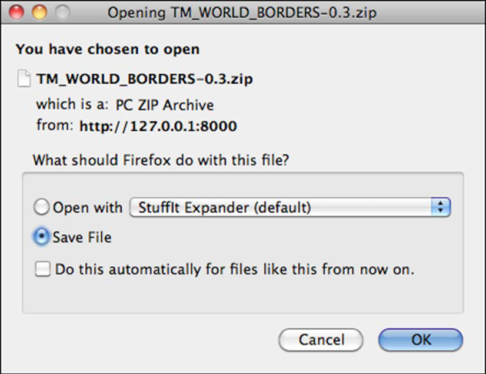

导出 shapefiles#
Exporting shapefiles
接下来我们需要实现导出shapefile的功能。导出shapefile的过程基本上是”导入”逻辑的反向操作，包含以下步骤：
创建OGR shapefile接收导出数据
将要素保存到shapefile
将属性保存到shapefile
将shapefile压缩为ZIP存档
删除临时文件
将ZIP文件发送回用户浏览器
这些工作将在shapefileIO应用中完成，并借助一些utils.py函数。首先我们在shapefileIO目录下创建exporter.py模块，初始只包含一个占位函数:
def export_data(shapefile):
return "More to come..."
该函数接收一个Shapefile对象，返回可被视图函数返回的HttpResponse对象，用于将导出的shapefile内容发送到用户浏览器以便保存。
然后在editor应用的views.py中添加视图函数:
def export_shapefile(request, shapefile_id):
try:
shapefile = Shapefile.objects.get(id=shapefile_id)
except Shapefile.DoesNotExist:
return HttpResponseNotFound()
return exporter.export_data(shapefile)
该视图函数通过shapefile的ID加载对象，传递给export_data()处理，返回的HttpResponse对象可使导出文件下载到用户电脑。
同时添加必要的导入语句:
from django.http import HttpResponseNotFound
from shapeEditor.shapefileIO import exporter
注意export_shapefile()视图接收shapefile_id参数，该参数来自URL。例如访问 http://127.0.0.1:8000/editor/export/1 时，shapefile_id将被设为1。
这需要在editor应用的urls.py中添加URL模式:
url(r'^export/(?P<shapefile_id>\d+)$', 'export_shapefile'),
list_shapefiles.html模板已使用该URL，在用户点击导出链接时附加shapefile的ID:
<a href="/editor/export/{{ shapefile.id }}">
Export
</a>
完成视图函数后，我们就可以开始在exporter.py模块中实现导出和下载shapefile的后台逻辑。
Next, we need to implement the ability to export a shapefile. The process of exporting a shapefile is basically the reverse of the “import” logic, and involves the following steps:
Create an OGR shapefile to receive the exported data.
Save the features into the shapefile.
Save the attributes into the shapefile.
Compress the shapefile into a ZIP archive.
Delete our temporary files.
Send the ZIP file back to the user’s web browser.
All this work will take place in the shapefileIO application, with help from some utils.py functions. Before we begin, let’s create an exporter module to handle the exporting process. Go to the shapefileIO directory, and create a new module named exporter.py. Initially, we’re just going to add a dummy function to this module:
def export_data(shapefile):
return "More to come..."
This function will take a desired Shapefile object, and return an HttpResponse that can be returned by the view function. This HttpResponse object will send the contents of the exported shapefile back to the user’s web browser, where it can be saved to disk.
Now let’s create the view function that will call the exporter and return the HTTP response back to the caller. Go to the editor application’s views.py module, and add the following new function:
def export_shapefile(request, shapefile_id):
try:
shapefile = Shapefile.objects.get(id=shapefile_id)
except Shapefile.DoesNotExist:
return HttpResponseNotFound()
return exporter.export_data(shapefile)
This view function takes the record ID of the desired shapefile, loads the Shapefile object into memory, and passes it to the export_data() function for processing. The resulting HttpResponse object is then returned to the caller, allowing the exported file to be downloaded to the user’s computer.
While we are editing this file, add the following additional import statements to the top:
from django.http import HttpResponseNotFound
from shapeEditor.shapefileIO import exporter
Note that the export_shapefile() view function takes an additional parameter, named shapefile_id. This parameter will be taken from the URL used to access the view, so that for example if the user accesses the URL http://127.0.0.1:8000/ editor/export/1, the shapefile_id parameter will be set to the value 1.
This is done by adding a special type of entry to the editor applications urls.py module. Edit this file, and add the following entry to the urlpatterns list:
url(r'^export/(?P<shapefile_id>\d+)$', 'export_shapefile'),
Our list_shapefiles.html template already makes use of this URL, adding the shapefile’s record ID to the URL when the user clicks on the Export hyperlink:
<a href="/editor/export/{{ shapefile.id }}">
Export
</a>
Now that we’ve written our view function, we can start to implement the behind-the-scenes logic required to export and download the shapefile. All of this will be implemented in the exporter.py module.
定义 OGR Shapefile#
Defining the OGR shapefile
我们将使用OGR创建用于存储导出要素的新shapefile。首先创建一个临时目录来存放shapefile内容，替换原来的占位函数export_data()为以下实现:
def export_data(shapefile):
dst_dir = tempfile.mkdtemp() # 创建临时目录
dst_file = str(os.path.join(dst_dir, shapefile.filename)) # 生成shapefile路径
创建好存储位置后，我们需要为shapefile设置空间参考系，并初始化数据源和图层:
dst_spatial_ref = osr.SpatialReference() # 创建空间参考对象
dst_spatial_ref.ImportFromWkt(shapefile.srs_wkt) # 从WKT导入参考系
driver = ogr.GetDriverByName("ESRI Shapefile") # 获取shapefile驱动
datasource = driver.CreateDataSource(dst_file) # 创建数据源
layer = datasource.CreateLayer(str(shapefile.filename), # 创建图层
dst_spatial_ref) # 指定空间参考
备注
注意我们使用str()将shapefile文件名转为ASCII字符串。因为Django使用Unicode字符串，而OGR无法处理Unicode文件名。属性名也需要同样处理。
接下来为shapefile定义存储属性的各个字段:
for attr in shapefile.attribute_set.all(): # 遍历所有属性
field = ogr.FieldDefn(str(attr.name), attr.type) # 创建字段定义
field.SetWidth(attr.width) # 设置字段宽度
field.SetPrecision(attr.precision) # 设置字段精度
layer.CreateField(field) # 在图层中创建字段
字段定义所需的信息直接来自Attribute对象，Django使遍历shapefile属性变得简单。
至此已完成shapefile的定义，接下来可以开始向新建的shapefile中保存数据。
We’ll use OGR to create the new shapefile that will hold the exported features. Let’s start by creating a temporary directory to hold the shapefile’s contents; replace your placeholder version of export_data() with the following:
def exportData(shapefile):
dst_dir = tempfile.mkdtemp()
dst_file = str(os.path.join(dst_dir, shapefile.filename))
Now that we’ve got somewhere to store the shapefile (and a filename for it), we’ll create a spatial reference for the shapefile to use, and set up the shapefile’s datasource and layer:
dst_spatial_ref = osr.SpatialReference()
dst_spatial_ref.ImportFromWkt(shapefile.srs_wkt)
driver = ogr.GetDriverByName("ESRI Shapefile")
datasource = driver.CreateDataSource(dst_file)
layer = datasource.CreateLayer(str(shapefile.filename),
dst_spatial_ref)
备注
Note that we’re using str() to convert the shapefile’s filename to an ASCII string. This is because Django uses Unicode strings, but OGR can’t handle unicode filenames. We’ll need to do the same thing for the attribute names.
Now that we’ve created the shapefile itself, we next need to define the various fields which will hold the shapefile’s attributes:
for attr in shapefile.attribute_set.all():
field = ogr.FieldDefn(str(attr.name), attr.type)
field.SetWidth(attr.width)
field.SetPrecision(attr.precision)
layer.CreateField(field)
Note how the information needed to define the field is taken directly from the Attribute object; Django makes iterating over the shapefile’s attributes easy.
That completes the definition of the shapefile. We’re now ready to start saving data into the newly-created shapefile.
将特征保存到 Shapefile#
Saving the features into the shapefile
由于shapefile可以使用任意有效的空间参考系，我们需要将要素从内部使用的空间参考系(EPSG 4326)转换到shapefile自身的空间参考系。首先需要创建osr.CoordinateTransformation对象来实现这一转换:
src_spatial_ref = osr.SpatialReference()
src_spatial_ref.ImportFromEPSG(4326) # 设置源坐标系为WGS84
coord_transform = osr.CoordinateTransformation(
src_spatial_ref, dst_spatial_ref) # 创建坐标转换器
我们还需要知道Feature对象中哪个几何字段存储了要素的几何数据:
geom_field = utils.calc_geometry_field(shapefile.geom_type) # 计算几何字段名
准备好这些信息后，就可以开始导出shapefile的要素了:
for feature in shapefile.feature_set.all(): # 遍历所有要素
geometry = getattr(feature, geom_field) # 获取几何数据
但这里我们遇到了一个问题。回想导入shapefile时，我们将Polygon和LineString几何体”包装”成了MultiPolygon和MultiLineString以保证数据库中几何类型一致。现在导出时，我们需要”解包”这些几何体，使只包含单个Polygon或LineString的几何体能够以原始类型导出。我们将使用utils.py函数来完成解包:
geometry = utils.unwrap_geos_geometry(geometry) # 解包几何体
这个utils.py函数我们稍后实现。
解包几何体后，我们可以将其转换回OGR几何体，转换到shapefile的空间参考系，并创建OGR要素:
dst_geometry = ogr.CreateGeometryFromWkt(geometry.wkt) # 从WKT创建OGR几何体
dst_geometry.Transform(coord_transform) # 坐标转换
dst_feature = ogr.Feature(layer.GetLayerDefn()) # 创建OGR要素
dst_feature.SetGeometry(dst_geometry) # 设置几何体
最后将要素添加到图层并调用Destroy()方法保存要素(以及图层)到shapefile:
layer.CreateFeature(dst_feature) # 将要素添加到图层
dst_feature.Destroy() # 销毁要素释放资源
datasource.Destroy() # 销毁数据源释放资源
在继续之前，让我们在utils.py中添加unwrap_geos_geometry()函数。这个函数很简单，当MultiPolygon或MultiLineString只包含一个几何体时，将其解包为单个Polygon或LineString:
def unwrap_geos_geometry(geometry):
if geometry.geom_type in ["MultiPolygon", "MultiLineString"]:
if len(geometry) == 1: # 如果只包含一个几何体
geometry = geometry[0] # 提取第一个几何体
return geometry
到目前为止进展顺利：我们已经创建了OGR要素，解包了几何体，并将所有内容存储到shapefile中。接下来准备保存要素的属性值。
Because the shapefile can use any valid spatial reference, we’ll need to transform the shapefile’s features from the spatial reference used internally (EPSG 4326) into the shapefile’s own spatial reference. Before we can do this, we’ll need to set up an osr.CoordinateTransformation object to do the transformation:
src_spatial_ref = osr.SpatialReference()
src_spatial_ref.ImportFromEPSG(4326)
coord_transform = osr.CoordinateTransformation(
src_spatial_ref, dst_spatial_ref)
We’ll also need to know which geometry field in the Feature object holds the feature’s geometry data:
geom_field = \
utils.calc_geometry_field(shapefile.geom_type)
With this information, we’re ready to start exporting the shapefile’s features:
for feature in shapefile.feature_set.all():
geometry = getattr(feature, geom_field)
Right away, however, we encounter a problem. If you remember when we imported the shapefile, we had to “wrap” a Polygon or a LineString geometry into a MultiPolygon or MultiLineString so that the geometry types would be consistent in the database. Now that we’re exporting the shapefile, we need to unwrap the geometry so that features that have only one Polygon or LineString in their geometries are saved as Polygons and LineStrings rather than MultiPolygons and MultiLineStrings. We’ll use a utils.py function to do this unwrapping:
geometry = utils.unwrap_geos_geometry(geometry)
We’ll implement this utils.py function shortly.
Now that we’ve unwrapped the feature’s geometry, we can go ahead and convert it back into an OGR geometry again, transform it into the shapefile’s own spatial reference system, and create an OGR feature using that geometry:
dst_geometry = ogr.CreateGeometryFromWkt(geometry.wkt)
dst_geometry.Transform(coord_transform)
dst_feature = ogr.Feature(layer.GetLayerDefn())
dst_feature.SetGeometry(dst_geometry)
Finally, we need to add the feature to the layer and call the Destroy() method to save the feature (and then the layer) into the shapefile:
layer.CreateFeature(dst_feature)
dst_feature.Destroy()
datasource.Destroy()
Before we move on, let’s add our new unwrap_geos_geometry() function to utils. py. This code is quite straightforward, pulling a single Polygon or LineString object out of a MultiPolygon or MultiLineString if they contain only one geometry:
def unwrap_geos_geometry(geometry):
if geometry.geom_type in ["MultiPolygon",
"MultiLineString"]:
if len(geometry) == 1:
geometry = geometry[0]
return geometry
So far so good; we’ve created the OGR feature, unwrapped the feature’s geometry, and stored everything into the shapefile. Now we’re ready to save the feature’s attribute values.
将属性保存到 Shapefile#
Saving the attributes into the shapefile
接下来我们需要保存每个要素关联的属性值。在导入shapefile时，我们曾使用utils.get_ogr_feature_attribute()函数从各种OGR数据类型中提取属性值并转为字符串存入数据库。现在需要执行相反的操作：将字符串值存入OGR属性字段。同样地，我们将通过utils.py函数处理复杂逻辑，在export_data()函数末尾添加以下代码:
...
dst_feature = ogr.Feature(layer.GetLayerDefn())
dst_feature.SetGeometry(dst_geometry)
# 遍历要素所有属性值
for attr_value in feature.attributevalue_set.all():
utils.set_ogr_feature_attribute(
attr_value.attribute, # 属性定义
attr_value.value, # 属性值字符串
dst_feature, # 目标OGR要素
shapefile.encoding # 字符编码
)
layer.CreateFeature(dst_feature)
dst_feature.Destroy()
datasource.Destroy()
备注
feature.attributevalue_set.all()使用了Django的反向外键查询机制。由于AttributeValue模型通过外键关联Feature，Django会自动为Feature实例添加attributevalue_set管理器，用于访问关联的所有属性值。更多细节参考Django文档关于关联对象的说明。
现在在 utils.py 中实现 set_ogr_feature_attribute() 函数。该函数需要处理各种OGR数据类型，将字符串值转换为适当类型后调用对应的SetField()方法:
def set_ogr_feature_attribute(attr, value, feature, encoding):
attr_name = str(attr.name)
if value == None:
feature.UnsetField(attr_name)
return
if attr.type == ogr.OFTInteger:
feature.SetField(attr_name, int(value))
elif attr.type == ogr.OFTIntegerList:
integers = eval(value)
feature.SetFieldIntegerList(attr_name, integers)
elif attr.type == ogr.OFTReal:
feature.SetField(attr_name, float(value))
elif attr.type == ogr.OFTRealList:
floats = []
for s in eval(value):
floats.append(eval(s))
feature.SetFieldDoubleList(attr_name, floats)
elif attr.type == ogr.OFTString:
feature.SetField(attr_name, value.encode(encoding))
elif attr.type == ogr.OFTStringList:
strings = []
for s in eval(value):
strings.append(s.encode(encoding))
feature.SetFieldStringList(attr_name, strings)
elif attr.type == ogr.OFTDate:
parts = value.split(",")
year = int(parts[0])
month = int(parts[1])
day = int(parts[2])
tzone = int(parts[3])
feature.SetField(attr_name, year, month, day,
0, 0, 0, tzone)
elif attr.type == ogr.OFTTime:
parts = value.split(",")
hour = int(parts[0])
minute = int(parts[1])
second = int(parts[2])
tzone = int(parts[3])
feature.SetField(attr_name, 0, 0, 0,
hour, minute, second, tzone)
elif attr.type == ogr.OFTDateTime:
parts = value.split(",")
year = int(parts[0])
month = int(parts[1])
day = int(parts[2])
hour = int(parts[3])
minute = int(parts[4])
second = int(parts[5])
tzone = int(parts[6])
feature.SetField(attr_name, year, month, day,
hour, minute, second, tzone)
Our next task is to save the attribute values associated with each feature. When we imported the shapefile, we extracted the attribute values from the various OGR data types and converted them into strings so they could be stored into the database. This was done using the utils.get_ogr_feature_attribute() function. We now have to do the opposite: storing the string value into the OGR attribute field. As before, we’ll use a utils.py function to do the hard work; add the following highlighted lines to the bottom of your export_data() function:
...
dst_feature = ogr.Feature(layer.GetLayerDefn())
dst_feature.SetGeometry(dst_geometry)
for attr_value in feature.attributevalue_set.all():
utils.set_ogr_feature_attribute(
attr_value.attribute,
attr_value.value,
dst_feature,
shapefile.encoding)
layer.CreateFeature(dst_feature)
dst_feature.Destroy()
datasource.Destroy()
备注
You may be wondering what feature.attributevalue_set. all() does. Because the AttributeValue object includes a foreign key linking each attribute value to the associated Feature object, the Feature object can refer to the set of attribute values that link back to it, using attributevalue_set. Using this technique, we can scan through the list of attribute values for a feature using feature. attributevalue_set.all().
If you want to learn more about these “reverse” foreign key lookups, see https://docs.djangoproject.com/en/dev/topics/db/queries/#related-objects.
Now let’s implement the set_ogr_feature_attribute() function within utils. py. As with the get_ogr_feature_attribute() function, set_ogr_feature_ attribute() is rather tedious but straightforward: we have to deal with each OGR data type in turn, processing the string representation of the attribute value and calling the appropriate SetField() method to set the field’s value. Here is the relevant code:
def set_ogr_feature_attribute(attr, value, feature, encoding):
attr_name = str(attr.name)
if value == None:
feature.UnsetField(attr_name)
return
if attr.type == ogr.OFTInteger:
feature.SetField(attr_name, int(value))
elif attr.type == ogr.OFTIntegerList:
integers = eval(value)
feature.SetFieldIntegerList(attr_name, integers)
elif attr.type == ogr.OFTReal:
feature.SetField(attr_name, float(value))
elif attr.type == ogr.OFTRealList:
floats = []
for s in eval(value):
floats.append(eval(s))
feature.SetFieldDoubleList(attr_name, floats)
elif attr.type == ogr.OFTString:
feature.SetField(attr_name, value.encode(encoding))
elif attr.type == ogr.OFTStringList:
strings = []
for s in eval(value):
strings.append(s.encode(encoding))
feature.SetFieldStringList(attr_name, strings)
elif attr.type == ogr.OFTDate:
parts = value.split(",")
year = int(parts[0])
month = int(parts[1])
day = int(parts[2])
tzone = int(parts[3])
feature.SetField(attr_name, year, month, day,
0, 0, 0, tzone)
elif attr.type == ogr.OFTTime:
parts = value.split(",")
hour = int(parts[0])
minute = int(parts[1])
second = int(parts[2])
tzone = int(parts[3])
feature.SetField(attr_name, 0, 0, 0,
hour, minute, second, tzone)
elif attr.type == ogr.OFTDateTime:
parts = value.split(",")
year = int(parts[0])
month = int(parts[1])
day = int(parts[2])
hour = int(parts[3])
minute = int(parts[4])
second = int(parts[5])
tzone = int(parts[6])
feature.SetField(attr_name, year, month, day,
hour, minute, second, tzone)
压缩 Shapefile#
Compressing the shapefile
现在我们已经将所需的数据导出为 OGR shapefile，我们可以将其压缩成一个 ZIP 压缩包。返回到 exporter.py 模块，并在 export_data() 函数的末尾添加以下内容:
temp = tempfile.TemporaryFile()
zip = zipfile.ZipFile(temp, 'w', zipfile.ZIP_DEFLATED)
shapefile_base = os.path.splitext(dstFile)[0]
shapefile_name = os.path.splitext(shapefile.filename)[0]
for fName in os.listdir(dst_dir):
zip.write(os.path.join(dst_dir, fName), fName)
zip.close()
注意，我们使用一个临时文件（命名为 temp）来存储 ZIP 压缩包的内容。导出过程完成后，我们将把 temp 返回给用户的 Web 浏览器。
Now that we’ve exported the desired data into an OGR shapefile, we can compress it into a ZIP archive. Go back to the exporter.py module and add the following to the end of your export_data() function:
temp = tempfile.TemporaryFile()
zip = zipfile.ZipFile(temp, 'w', zipfile.ZIP_DEFLATED)
shapefile_base = os.path.splitext(dstFile)[0]
shapefile_name = os.path.splitext(shapefile.filename)[0]
for fName in os.listdir(dst_dir):
zip.write(os.path.join(dst_dir, fName), fName)
zip.close()
Note that we use a temporary file, named temp, to store the ZIP archive’s contents. We’ll be returning temp to the user’s web browser once the export process has finished.
删除临时文件#
Deleting temporary files
接下来，我们必须通过删除我们之前创建的shapefile来清理:
shutil.rmtree（dst_dir）
请注意，我们不必删除临时的ZIP存档，因为当文件关闭时，tempfile模块会自动为我们完成此操作。
We next have to clean up after ourselves by deleting the shapefile that we created earlier:
shutil.rmtree(dst_dir)
Note that we don’t have to remove the temporary ZIP archive, as that’s done automatically for us by the tempfile module when the file is closed.
将 ZIP 存档返回给用户#
Returning the ZIP archive to the user
导出 shapefile 的最后一步是将 ZIP 压缩包发送到用户的 Web 浏览器，以便它可以被下载到用户的计算机上。为此，我们将创建一个 HttpResponse 对象，并使用 Django 的 FileWrapper 对象将 ZIP 压缩包附加到 HTTP 响应中:
f = FileWrapper(temp)
response = HttpResponse(f, content_type="application/zip")
response['Content-Disposition'] = \
"attachment; filename=" + shapefileName + ".zip"
response['Content-Length'] = temp.tell()
temp.seek(0)
return response
如您所见，我们设置 HTTP 响应，表明我们正在返回一个文件附件。这会强制用户的浏览器下载该文件，而不是尝试显示它。我们还使用原始 shapefile 的名称作为下载文件的名称。
至此，export_data() 函数的定义已完成。还有一件事要做：在 exporter.py 模块的顶部添加以下导入语句:
from django.http import HttpResponse
from django.core.servers.basehttp import FileWrapper
我们终于完成了 “导出 Shapefile” 功能的实现。通过运行服务器并点击其中一个 shapefile 旁边的 Export 超链接来进行测试。正常情况下，系统会稍作暂停，并提示您保存 shapefile 的 ZIP 压缩包到磁盘：
The last step in exporting the shapefile is to send the ZIP archive to the user’s web browser so that it can be downloaded onto the user’s computer. To do this, we’ll create an HttpResponse object which includes a Django FileWrapper object to attach the ZIP archive to the HTTP response:
f = FileWrapper(temp)
response = HttpResponse(f, content_type="application/zip")
response['Content-Disposition'] = \
"attachment; filename=" + shapefileName + ".zip"
response['Content-Length'] = temp.tell()
temp.seek(0)
return response
As you can see, we set up the HTTP response to indicate that we’re returning a file attachment. This forces the user’s browser to download the file rather than trying to display it. We also use the original shapefile’s name as the name of the downloaded file.
This completes the definition of the export_data() function. There’s only one more thing to do: add the following import statements to the top of the exporter. py module:
from django.http import HttpResponse
from django.core.servers.basehttp import FileWrapper
We’ve finally finished implementing the “Export Shapefile” feature. Test it out by running the server and clicking on the Export hyperlink beside one of your shapefiles. All going well, there’ll be a slight pause and you’ll be prompted to save your shapefile’s ZIP archive to disk: